Mi gestor
Mi gestor отвечает на вопросы об услугах и счетах, оформляет заявки и передаёт разговор человеку вместе с кратким пересказом.
Честный помощник с первого слова
Первое, что говорит Mi gestor: «Я помощник с искусственным интеллектом». Он не выдаёт себя за человека и объясняет простыми словами. Под строкой ввода — подсказки с частыми вопросами, чтобы начать было легче.
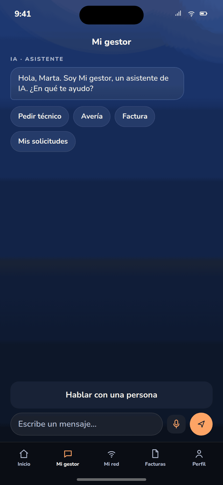
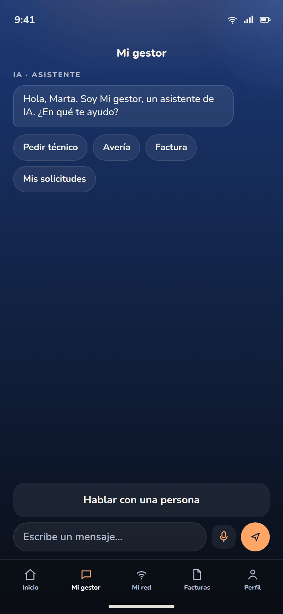
Сказали — и заявка уже в работе
Нужен мастер или вы переезжаете — скажите это в чате. Mi gestor оформит заявку и покажет её карточку прямо в разговоре. Важные изменения, например тариф или способ оплаты, подтверждает сотрудник.
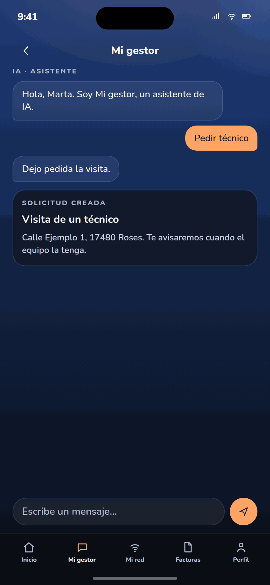
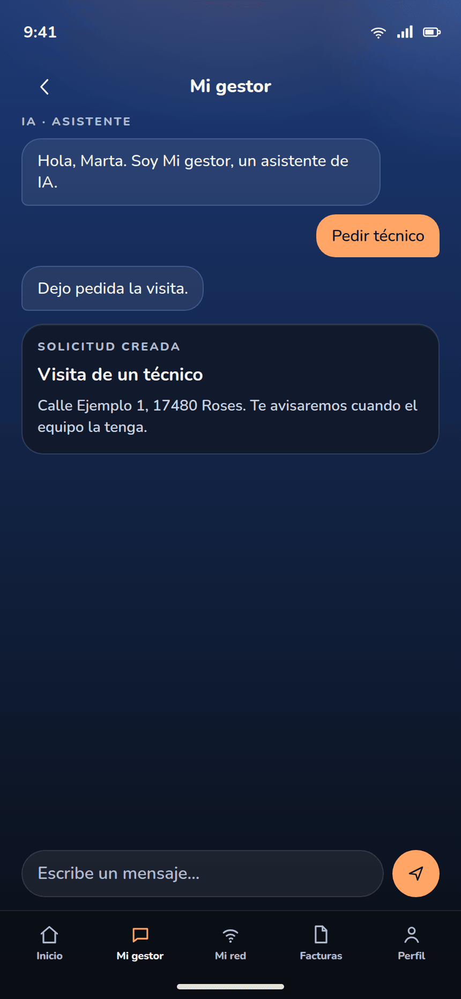
Видно, на каком этапе ваш вопрос
Обращения собраны в одном списке, открытые и закрытые отдельно. У каждого видно, что с ним сейчас, поэтому звонить второй раз ради статуса не нужно.
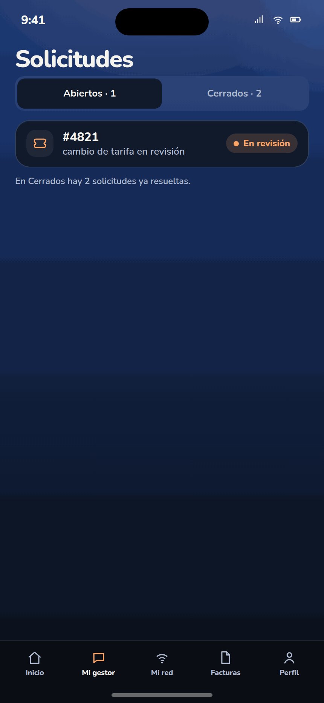
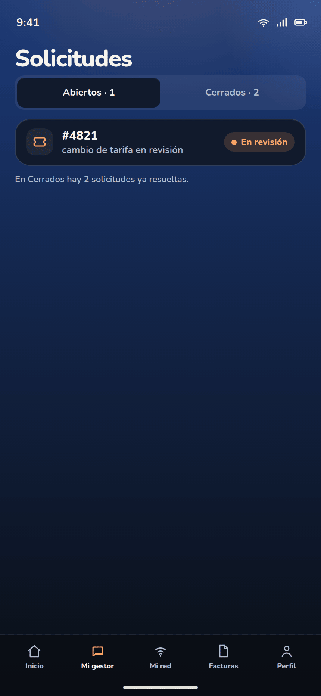
Не хочется печатать — скажите
Сообщение можно надиктовать. Речь распознаётся на самом телефоне, а при первом использовании приложение спросит разрешения. Если нужного языка на телефоне нет, кнопки микрофона просто не будет.
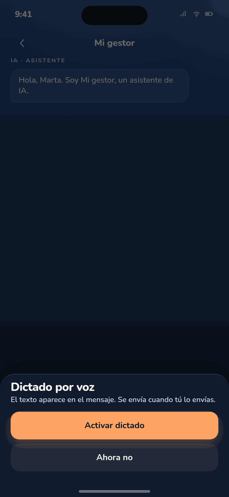
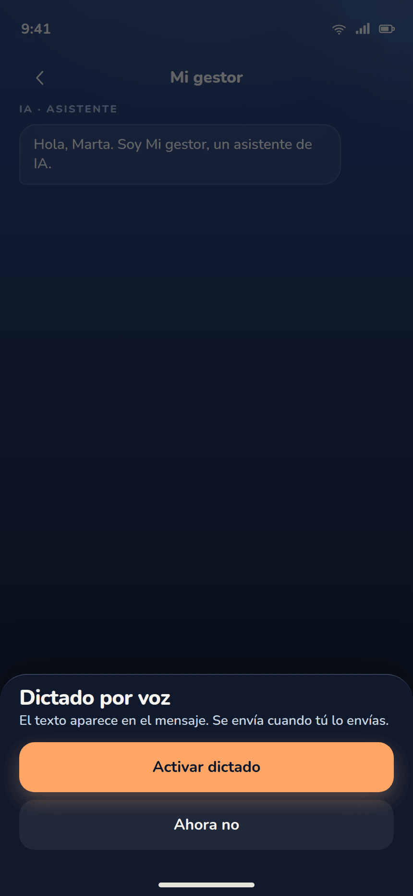
Человеку не нужно объяснять всё заново
Когда вы просите живого сотрудника, Mi gestor передаёт ему короткий пересказ: кто вы и о чём шла речь, без лишних личных подробностей. Сотрудник продолжает с того места, где вы остановились. Передумали — можно вернуться в чат.


Вечером — честный ответ, а не тишина
Если сейчас никого нет на месте, приложение так и скажет. Оставьте просьбу, и сотрудник свяжется с вами в рабочее время. Или продолжайте с Mi gestor.
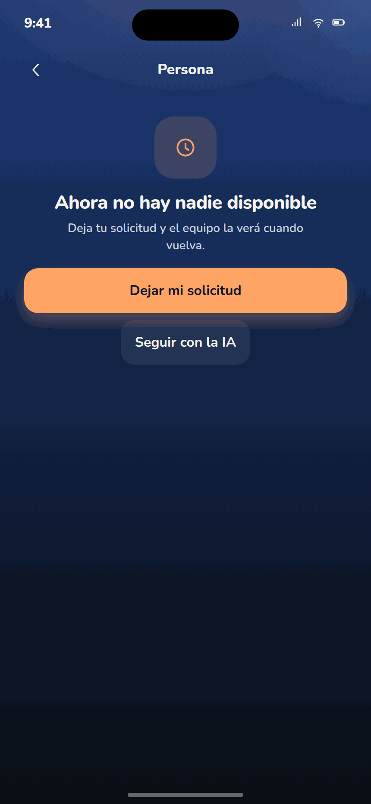
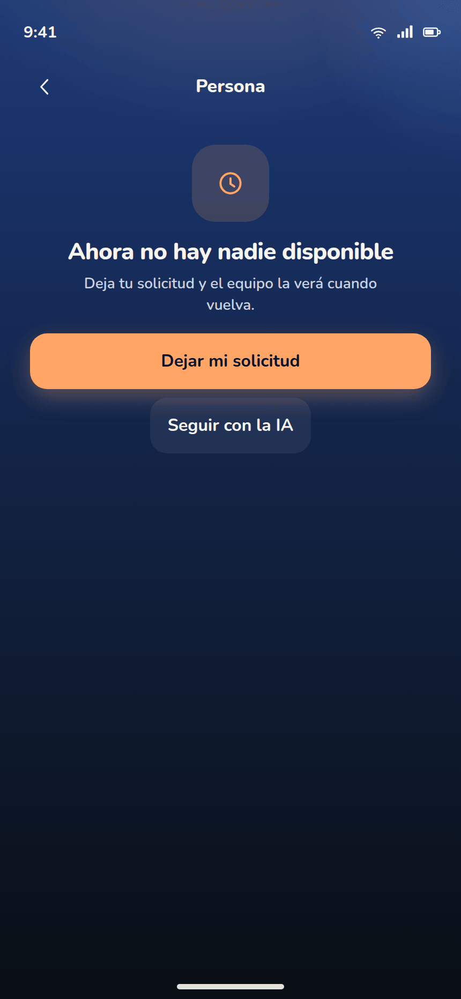
Для заявки хватит имени и телефона
Чтобы оставить заявку, достаточно имени и номера телефона, почта — по желанию. Документы и банковские реквизиты в чате не нужны. Если кто-то просит их в переписке от имени OrroFi, сначала спросите Mi gestor в приложении.
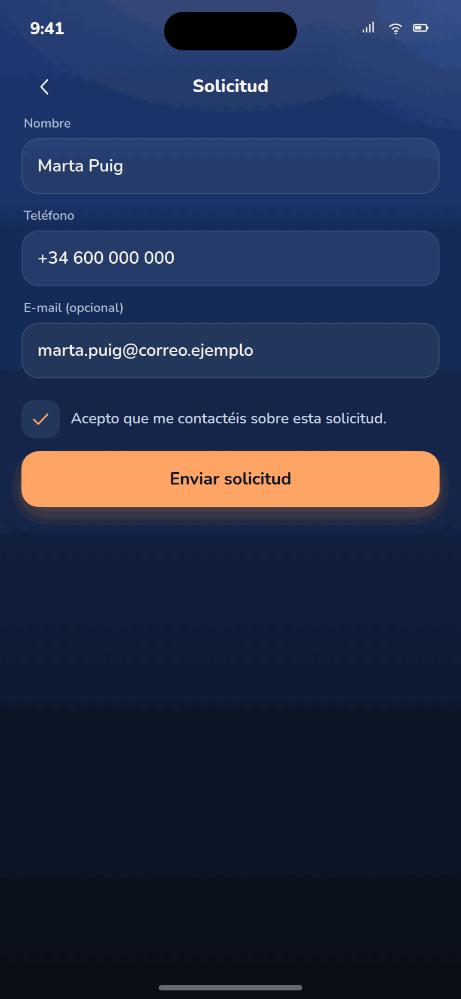